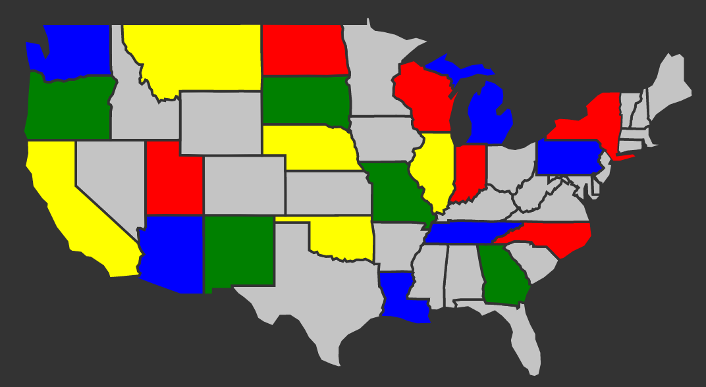

Bienvenue sur ce site ! Tu découvriras ici plein d’informations sur le théorème des 4 couleurs ainsi qu’un jeu qui pourrait te plaire :)
En mathématiques, le théorème des 4 couleurs nous explique comment colorier une carte d’une façon quelque peu particulière…
Il suffirait d’uniquement 4 couleurs pour colorier une carte fragmentée sans qu’il n’y ait jamais la même couleur de part et d’autre d’une frontière… C’est ce que nous allons voir !
Voici une carte coloriée en respectant le théorème des 4 couleurs.
On remarque que si l’on prend n’importe quelle région de la carte et que l’on regarde toutes les régions qui lui sont frontalières, aucune d’entre elle n’a la même couleur que celle du centre.
C’est une propriété intéressante qui a été découverte grâce au travail de nombreux mathématiciens du XIXe et du XXe siècle.
En 1852, Francis Guthrie s’amuse à colorier une carte des cantons d’Angleterre et remarque que 4 couleurs suffisent pour qu’il n’y ait jamais 2 régions adjacentes de la même couleur. En bon mathématicien qu’il est (et qui s’ennuie un peu trop), il se demande si c’est généralisable à n’importe quelle carte. Le problème s’est avéré plus compliqué que prévu, puisque la réponse n’arrivera qu’un siècle plus tard.
Il se demandait s’il était possible de colorier ces cartes de façon à ce que deux régions partageant une frontière soient toujours de couleur différente ? Peut-on colorier proprement une carte avec seulement 5 couleurs ? 4 couleurs ? 3 couleurs ou 2 couleurs ?
Quand Francis Guthrie observe en 1852 ce phénomène sur sa carte d’Angleterre, il s’empresse d’en parler à son ancien professeur. Malheureusement il obtient peu d’aide de ses confrères car ils ont tous "d’autres projets plus intéressants pour le moment" que de colorier des cartes.
Le problème va de mathématiciens en mathématiciens et Arthur Cayley écrira le premier article décrivant les difficultés de la question.
On peut considérer ce problème assez intéressant dans sa résolution mathématique (si), car sa démonstration, à la fin du XXe siècle, a nécessité l'usage d'un ordinateur (qui a calculé pendant plus de 1200 heures, le pauvre). Même aujourd'hui personne n'a réellement réussi à faire la démonstration "à la main".
Bref, le théorème des 4 couleurs énonce que n’importe quelle carte peut être colorée proprement avec seulement 4 couleurs.
Essaye de colorier ces cartes en respectant le théorème des 4 couleurs dans ce jeu qu'on te propose...
Il consiste à colorier différentes cartes en respectant le théorème des 4 couleurs, qu'on s'est embêté à expliquer depuis tout à l'heure (quand même). Il y a un total de 10 cartes (géographiques et géométriques) dont la difficulté monte crescendo (il y en a pour tous les goûts haha).
Le jeu se joue à la souris. Tu disposes d'un pointeur de souris (pour l'instant rien d'extravagant) initialement sans couleur ainsi que d'une petite palette de 4 couleurs en bas de l'écran. Si tu cliques sur une couleur de la palette, disons le vert, ton pointeur deviendra vert ! Avec cette souris verte (🎵 uneuh souris verteuuh 🎵) tu vas pouvoir colorier la carte.
Evidemment on a pris soin de créer des cartes avec plusieurs zones. Quand tu cliques sur une zone avec une souris colorée, la zone se colorie entièrement de cette couleur. Pour redonner à une zone sa couleur neutre, il suffit de re-cliquer sur la zone coloriée avec le pointeur de la même couleur.
Le niveau est automatiquement réussi si tu arrives à faire en sorte qu'aucune frontière ne sépare la même couleur. Si, pendant ta résolution du niveau, tu t'es mélangé les pinceaux (palettes, coloriage, pinceaux... super drôle non ?), il te suffit de cliquer sur le bouton "Rejouer" en haut à gauche. Enfin, si tu préfères le côté obscur de la force, on t'a mis à disposition un magnifique thème sombre.
Si une image vaut bel et bien mille mots, j'espère que l'expérience que tu t'apprêtes à faire (avec un équivalent 60 000 mots/secondes du coup, accroche toi à ton dictionnaire) sera beaucoup plus convaincante !!
Si vous repérez des bugs, pensez à nous prévenir ;)